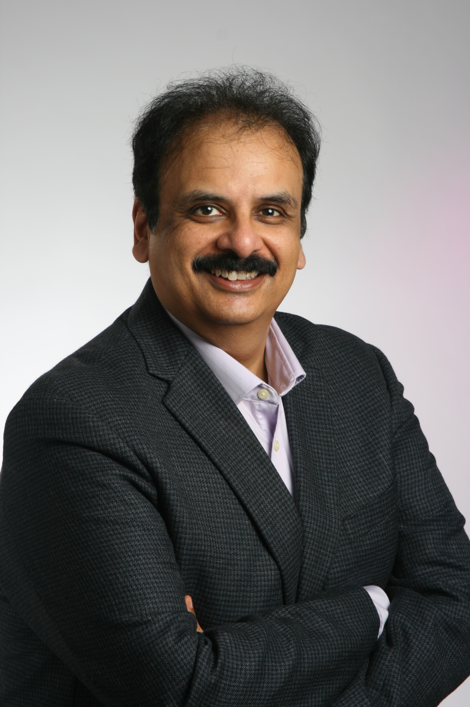

Victor Bahl
Microsoft Research
Victor Bahl is a distinguished scientist and director of the mobility & networking group in Microsoft Research. He serves on the Microsoft Research Redmond Lab leadership team managing over 200 researchers, engineers, and staff. He advises Microsoft’s CEO and his senior leadership team on strategy and long-term vision related to networked systems, cloud computing, data center infrastructure, mobile computing, and wireless systems.
Dr. Bahl founded the networking research group at Microsoft. Under his direction, his group has had game-changing impact on Microsoft products and the industry at large. Specifically, they designed the Azure data center network architecture, Azure software load balancer, Azure software defined inter-DC network, and recently, Azure remote direct memory networks.. Bahl created a paradigm shift in Microsoft’s cloud computing strategy with the introduction of edge computing. His team has delivered bestselling products incl. XBOX wireless controllers, Mixer HypeZone, Open Network Emulator, Embedded Social, and Rocket video analytics engine. His research has had global impact on spectrum regulations and policies and with the introduction of white space networking he helped open up 180 MHz of US spectrum for unlicensed use. Bahl developed the world’s first public Wi-Fi hotspot, indoor localization system, wireless virtualization system, wireless enterprise management, and multi-radio system.
Dr. Bahl has published 125+ papers with over 48,000 citations. He has been granted 161 US patents and delivered over 50 keynotes and plenaries. For his seminal work in wireless systems and broadband access he has received four lifetime achievement awards: the ACM Distinguished Service Award, the IEEE Koji Kobayashi Computers and Communications Award, the SIGMOBILE Outstanding Contributions Award and the INFOCOMM Achievement Award. He has also been honored with two United States FCC awards, two national transportation awards, two test-of-time awards, three best paper awards, two distinguished alumni awards, a IEE distinguished service award, and a IEEE outstanding leadership award. Dr. Bahl is the founder/co-founder of ACM SIGMOBILE, ACM MobiSys, ACM GetMobile and several other important conferences. With his wife, he co-founded Computing For All, a nonprofit dedicated to increasing and enhancing computer science education for students of all ages and from all backgrounds. Dr. Bahl is a Fellow of the ACM, IEEE, and AAAS.